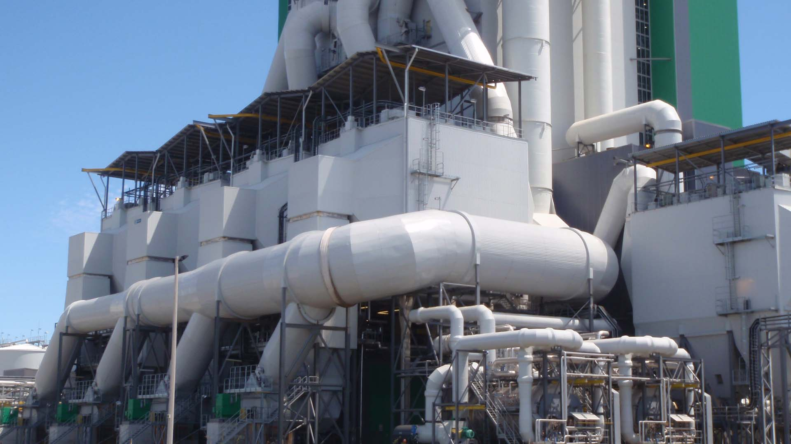

Kegiatan 3 - Penanganan limbah dan dinamika komunitas
A. Penanganan limbah padat
Penanganan limbah padat merupakan semua limbah non-cair. Dalam meminimalkan limbah padat diperlukan konsep pembangunan berkelanjutan dalam menangani penggunaan sumber daya alam dan memberi nilai terhadap sumber daya. Tahapan yang dapat dilakukan dalam menghemat penggunaan sumber daya alam ialah dengan menggunakan 4R.
- Reduce: Pengurangan karbon dioksida dengan mengurangi sumber daya kita seperti energi, air, dan limbah
- Recover: Pemanfaatan Limbah untuk menghasilkan pembangkit energi dan pemulihan panas untuk uap.
- Reuse: Memanfaatkan kembali barang bekas tanppa memprosesnya terlebih dahulu, seperti galon sebagai media tanam.
- Recycle: Daur ulang plastik, karton, kertas, logam, kayu, dan makanan.
Kategori limbah padat dapat meliputi sebagai berikut:
- Sampah organik: limbah dari makanan baik itu berasal dari restoran, tempat pasar, dll
- Bahan mudah terbakar: kertas, kayu, daun kering, kemasan untuk barang bantuan
- Tidak mudah terbakar: logam, kaleng, botol, batu
- Debu: residu dari api yang digunakan untuk memasak
- Sampah berukuran besar: dahan pohon, ban
- Hewan mati: bangkai hewan peliharaan dan ternak
- Limbah berbahaya: oli, asam aki, limbah medis
- Limbah konstruksi: atap, puing-puing, beton rusakcair, gas
Pada dasarnya pengelolaan limbah padat mula-mula dilakukan pembangkitan limbah padat dimana menjadi bahan yang tidak berharga lagi, tahap selanjutnya dilakukan penyimpanan bahan limbah setelah dan sebelum limbah tersebut masuk ke pembuangan terakhir, kemudian dilakukan pembuangan ditempat yang aman.
Pemanfaatan teknologi telah digunakan dalam penanganan limbah padat, diantaranya:
- Communal pit disposal
Dalam sistem pengelolaan limbah padat yang paling sederhana adalah konsumen membuang limbah langsung ke lubang komunal. Lubang harus dipagari untuk mencegah anak kecil jatuh dan umumnya tidak boleh lebih dari 100m dari tempat tinggal yang akan dilayani. Keuntungan cepat diimplementasikan dan membutuhkan sedikit operasi dan pemeliharaan. Sekat lubang komunal dapat menyebabkan pembuangan sembarangan dan pekerja limbah diperlukan untuk mengelola lubang.
Setelah limbah padat diangkut biasanya limbah tersebut dibawa ke lokasi TPA. Sampah ditempatkan dalam galian besar (lubang atau parit) di dalam tanah, yang ditimbun kembali dengan tanah galian setiap hari sampah ditumpahkan. Idealnya sekitar 0,5m tanah harus menutupi sampah guna mencegah hewan menggali sampah dan lalat berkembang biak. Lokasi TPA juga harus diputuskan melalui konsultasi dengan otoritas lokal dan penduduk yang terkena dampak. Dampak positifnya yaitu penimbunan tanah berlapis jika dikelola dengan benar akan efektif. Dampak negatifnya memerlukan biaya yang besar. - Pengomposan dan Hog feeding (Pemanfaatan limbah sebagai bahan makanan ternak)
Pengomposan sayuran dan sampah organic dapat dilakukan dengan cara dibusukkan kemudian digali ke dalam tanah dengan menggunakan bakteri hingga menjadi pupuk kompos. Pemanfaatan limbah sayuran seperti sisa dan ampas sayur dan bahan makan lain yang dapat dimanfaatkan untuk bahan makan ternak.
B. Penanganan limbah cair
Limbah cair memberikan ancaman bagi kesehatan manusia dan lingkungan karena dapat mencemari tanah dan air minum jika tidak ditangani dengan benar. Pengelolaan limbah cair merupakan metode dalam mencegah pembuangan limbah ke aliran air melalui pengumpulan dan pembuangan limbah dengan benar.
Metode pembuangan limbah cair diantaranya :
- Penyaringan yaitu untuk menghilangkan zat padat
- Perajangan untuk memotong benda yang berada di dalam air limbah
- Bak penangkap pasir dan lemak yaitu untuk menghilangkan pasir dan memisahkan benda terapung
- Netralisasi untuk menetralkan asam atau basa
- Pengendapan untuk menghilangkan benda tercampur
- Saringan pasir untuk menghilangkan partikel padat yang lebih kecil
Pada dasarnya kegiatan pengolahan limbah terdiri dari beberapa tahap. Tiap tahapannya tidak harus mengikuti tahapan yang ada, namun bisa saja diadakan penyesuaian dengan kebutuhan yang ada. Tahapan tersebut diantaranya sebagai berikut:

- Pengolahan pendahuluan (Pre treatment)
Tahapan ini memerlukan pembersihan dalam mempercepat proses pengolahan ke tahap selanjutnya. Proses pembersihan tersebut dibagi menjadi pengambilan benda terapung dan pengambilan benda mengendap. Pengambilan benda terapung dengan tujuan menghilangkan zat padat yang kasar dengan menggunakan saringan. Pengambilan benda mengendap untuk menghilangkan kerikil halus yang berupa pasir, koral, atau zat padat berat dengan menggunakan bak penampung. - Pengolahan pertama (Primary treatment)
Pengolahan pertama bertujuan untuk menghilangkan zat padat tercampur melalui pengendapan atau pengapungan. Pengendapan dimaksudkan agar menghasilkan hasil endapan yang optimal. Pengapungan dapat dilakukan dengan menggunakan gelembung gas dalam mengambil zat-zat yang tercampur guna meningkatkan daya apung campuran. Terdapatnya gas tersebut mampu membuat larutan menjadi kecil sehingga campuran zat akan mengapung. - Pengolahan kedua (Secondary treatment)
Pengolahan kedua pada dasarnya mencakup proses biologis dalam mengurangi bahan organic melalui mikroorganisme yang ada didalamnya. Tahapan ini dipengaruhi oleh faktor seperti jumlah air limbah, tingkat dan jenis kekotoran yang ada. - Pengolahan ketiga (Tertiary treatment)
Pengolahan pada tahap ini baru dipergunakan apabila pada pengolahan sebelumnya terdapat zat yang masih berbahaya bagi masyarakat umum. Tahap ini merupakan pengolahan secara khusus sesuai dengan kandungan zat yang terbanyak dalam limbah. Biasanya diterapkan pada pabrik yang menghasilkan air limbah yang khusus. Terdapat beberapa jenis pengolahan yang sering dilakukan seperti saringan pasir, precoal filter, mikrostaining, vacuum filter, dll. - Pembunuhan kuman (Desinfektion)
Pembunuhan bakteri bertujuan untuk membunuh mikroorganisme patogen yang ada di dalam air limbah. Zat kimia yang digunakan dalam membunuh mikroorganisme tersebut diantaranya klorin yang mampu menonaktifkan enzim sehingga terjadi kerusakan dinding sel. Dalam menggunakan bahan kimia pun perlu diperhatikan dalam memilih bahan kimia yaitu daya racun zat kimia tersebut, efektivitasnya, toksisitasnya terhadap makhluk hidup. - Pembuangan lanjutan (Ultimate disposal)
Setiap tahapan pengolahan air limbah maka hasilnya berupa lumpur yang perlu dilakukan pengolahan secara khusus. Dalam melaksanakan pengolahan lanjutan diperlukan beberapa tahapan seperti proses pemekatan, stabilisasi, pengaturan, pengurangan air, pengeringan, dan pembuangan.
Dalam memahami sistem penanganan limbah cair domestik simaklah video berikut agar lebih memudahkan dalam pemahaman anda.
C. Penanganan limbah gas
Limbah gas termasuk campuran semua gas yang berupa embun, uap, kabut, dan awan. Umumnya, limbah gas berasal dari limbah industri berupa uap atau partikel tersuspensi dalam air dan asap kendaraan bermotor Penanganan limbah gas dapat dilakukan dengan teknologi seperti berikut.
- Filter udara
Filter udara dipasang pada cerobong untuk menyaring kotoran. Pemakaian filter udara ini harus selalu di periksa keadaannya secara rutin apabila filter sudah jenuh dengan debu.
- Cyclone separator
Pengendap siklon merupakan pengendap debu yang terdapat dalam gas buangan atau udara di ruangan pabrik yang berdebu. Prinsip kerjanya dengan pemanfaatan gaya sentrifugal dari udara/gas buangan yang sengaja dihembuskan melalui tepi dinding tabung siklon sehingga partikel yang relatif berat akan jatuh ke bawah. Alat ini dikenal dengan pre cleaner karena umumnya bertujuan menghilangkan partikel besar. Efektivitas dari pemakaian ini mampu menghilangkan debu bergantung pada ukuran partikel.
- Gas Scrubbers atau Wet Collor
Prinsip dari filter basah yaitu menyerap polutan bahan kimia seperti senyawa amonia, klorin, atau belerang ke dalam cairan pembersih. Cairan pembersih yang digunakan menyesuaikan dengan sifat polutan yang ditargetkan.
- Elestrostatic precipitator
Pengendap elektrostatik digunakan untuk membersihkan dari aliran gas polutan berbahaya dengan memanfaatkan gaya muatan elektrostatik yang diinduksi. Pengendap elektrostatik memakai tenaga listrik yang sangat rendah dalam pengoperasiannya. Biasanya digunakan di pabrik asam sulfat untuk memisahkan partikel halus dan kabut asam sulfat dari aliran gas. Alat ini dapat menjadi solusi untuk menangkap partikel submicron, logam berat, kabut, dan asap.

D. Penanganan limbah bahan berbahaya dan beracun (B3)
Limbah B3 merupakan sisa suatu usaha dan atau kegiatan yang mengandung bahan berbahaya baik secara langsung mencemarkan, membahayakan lingkungan, kesehatan, kelangsungan hidup makhluk hidup. Semua limbah B3 harus ditangani, dikumpulkan, disimpan kemudian dikelola sesuai dengan ketentuan yang berlaku. Limbah B3 yang dihasilkan seperti dari perkebunan dan pabrik harus dikirim ke tempat penyimpanan sementara limbah B3 dengan jangka waktu 1 hari. Terdapat kode warna limbah B3 pada tempat sampah yaitu ditandai dengan warna merah dengan tujuan untuk menghindari bahaya bagi petugas/ orang lain. Adapun syarat penyimpanan sementara limbah B3 diantaranya
- Tidak boleh bersentuhan langsung dengan lantai/tanah
- Tidak ada matahari atau hujan
- Memiliki sirkulasi udara yang baik
- Terdapat tanda tempat penyimpanan limbah B3 disertai symbol keselamatan kerja dan lingkungan.
Berikut ini merupakan tabel yang merupakan sumber limbah B3
| Limbah B3 | Produk Limbah |
|---|---|
| Limbah kegiatan industri berupa senyawa kimia yang terlepas ke lingkungan. Pengolahan limbah tersebut dapat dilakukan dengan cara thermal, stabilisasi, solidifikasi dengan teknologi ramah lingkungan |
 |
| Limbah kegiatan rumah sakit (berupa limbah radioaktif, limbah patologis seperti sisa jaringan organ atau cairan tubuh, limbah farmasi dan benda tajam yang terkontaminasi kuman dan berpotensi menularkan penyakit). |  |
| Limbah kegiatan rumah tangga (berupa sisa obat kadaluarsa, pemutih, detergen, baterai bekas) |  |
| Limbah pertanian berupa insektisida dan pupuk |
Pada dasarnya karakteristik limbah B3 yaitu mudah terbakar, mudah meledak, reaktif, infektif, korosif dan beracun. Dalam menangani limbah B3 terdapat langkah yang perlu dilakukan, yaitu:
- Pengemasan limbah B3 harus dalam keadaan baik, tidak terdapat kerusakan, anti karat dan kebocoran
- Bentuk, ukuran, dan bahan kemasan limbah B3 perlu diperhatikan keamanannya dan kemudahan dalam penangannya
- Limbah B3 tidak boleh disimpan bersama dalam satu kemasan apabila tidak cocok
- Jika terdapat kebocoran/ ketidaklayakan limbah B3 maka limbah tersebut harus dipindahkan menjadi satu paket.
- Masa berlakunya penyimpanan limbah B3 yakni 90 hari bagi limbah yang volumenya kurang dari 50 kg per hari.
Get To Know About MOL
Musibah banjir yang selalu menghampiri daerah perkotaan tidak sepenuhnya diakibatkan oleh pengelolaan drainase yang buruk, akan tetapi salah satunya yaitu produksi limbah berupa sampah rumah tangga yang terlampau tinggi. Sampah di daerah perkotaan lebih banyak didominasi sampah organik dimana sering diabaikan oleh masyarakat karena kurangnya pemahaman mengolah sampah organik dan belum memahami peran mikroorganisme dekomposisi yang mampu mengurai sampah.
Mikroorganisme memiliki berbagai manfaat dalam kehidupan sehari-hari, misalnya pada lingkungan hidup seperti tanah adanya mikroorganisme dapat menentukan tingkat kesuburan tanah dan memperbaiki kondisi tanah. Mikroorganisme ini mudah dibudidayakan dengan memanfaatkan mikroorganisme lokal (MOL). Bahan baku untuk membuat MOL terdiri dari 3 komponen utama yang nantinya berfungsi membuat bakteri tumbuh dan hidup subur.
- Karbohidrat yang dapat diperoleh dari air cucian beras, sisa gandum, kentang, jagung, singkong, dan nasi basi.
- Glukosa yang dapat diperoleh dari bahan yang mengandung gula misalnya gula merah, gula pasir, air kelapa.
- Sumber mikroorganisme dapat diperoleh pada sisa buah busuk, terasi, ikan, rebung bambu, bonggol pisang, cairan isi perut hewan
Komponen tersebut nantinya mampu mempengaruhi pertumbuhan bakteri selama proses dekomposisi bahan organik. Mikroorganisme local (MOL) mampu digunakan juga sebagai pupuk hayati, pestisida organik. Kandungan bakteri yang terdapat dalam MOL berpotensi dalam merangsang pertumbuhan dan pengendali hama serta penyakit tanaman. Berikut ini langkah penggunaan MOL menggunakan buah
Mol Buah
Bahan :
- 1 kg buah yang busuk (pisang, papaya, manga, nanas)
- 100 gram gula merah
- 1 kg air kelapa
- 1 liter air cucian beras
Cara Membuat
- Potong buah yang sudah busuk
- Masukkan irisan gula merah dalam air cucian beras di dalam wadah
- Masukkan potongan buah ke dalam wadah lalu diaduk rata
- Tutup wadah dan diamkan untuk proses fermentasi selama 3-7 hari. Jika ingin mempercepat proses fermentasi bisa ditambahkan terasi, namun akan merubah aroma buah

MOL buah berfungsi sebagai pupuk cair yang jika sudah bisa digunakan dapat disemprotkan ke batang dan daun pada tanaman. Berdasarkan hasil eksperimen diketahui bahwa pembuatan MOL buah tidak ada bau busuk melainkan beraroma buah-buahan. MOL buah nantinya akan menghasilkan gas dan proses fermentasi yang diperkirakan berakhir setelah 2 hari. Hal ini disebabkan MOL tergolong cepat pembuatannya dan dapat digunakan langsung sebagai aktivator pembuatan kompos.